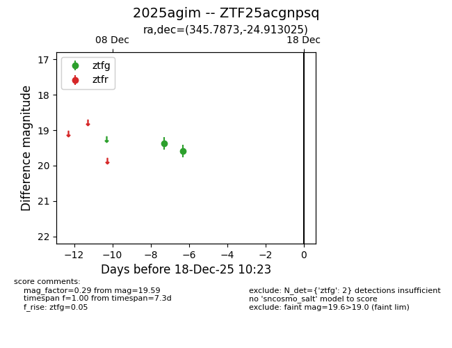
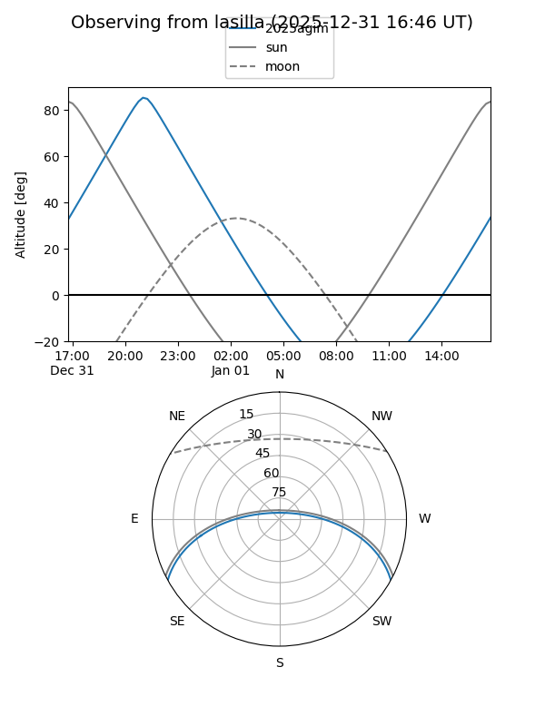
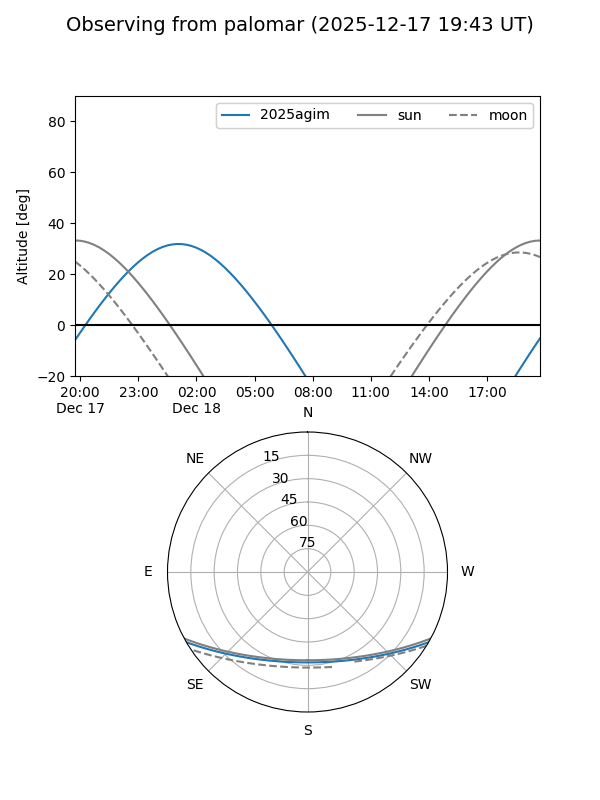

2025agim
Target 2025agim at 2025-12-31 18:00
Aliases and brokers:
FINK: link
Lasair: link
ALeRCE: link
TNS: link
YSE: link
alt names
ZTF25acgnpsq (ztf,fink_ztf)
2025agim (tns,yse)
Coordinates:
equatorial (ra, dec) = 345.7873,-24.91302
equatorial (HMS+DMS) = 23:03:08.95,-24:54:46.89
galactic (l, b) = (32.0078,-65.61807)
Flags:
Photometry:
last ztfg=19.59
2 ztfg detections
Lightcurve

Visibility


Additional plots